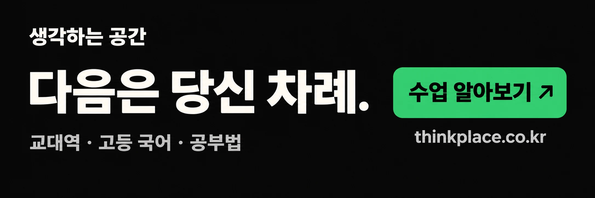

지금 main(45초·5단계·공유·배너) 화면을 바탕으로 그렸어요. 숫자는 예시 값이에요. 기록은 지금처럼 그 브라우저에만 저장하고 서버는 쓰지 않아요.
냥이잡기
종이 울리기 전에 부정행위를 모두 찾아내세요.
학생을 눌러 가까이에서 살펴보세요.
부정행위를 발견하면 신고하고,
손을 든 학생의 요청도 들어주세요.

빨간 점은 아직 확인하지 않은 새 업적이 있을 때만 떠요. 첫 화면 문구는 그대로예요.
❓ 숨은 업적이 하나 더 있어요
3 / 5 단계
“모두 수고했어요!”
이 단계 다시 하기
처음으로
새 업적이 없으면 이 줄이 없어서 지금 결과 화면과 똑같아요. 두 개 이상이면 "번개 감독 외 1개"로 한 줄에 줄여요. 누르는 버튼이 아니라 알림이라, 다음 단계로 가는 흐름은 그대로예요.
| 업적 | 조건 | 메모 |
|---|---|---|
| 💚 무결점 | 3단계 이상을 생명 3개 그대로 통과 (오인·민원 0) | 실력 |
| ⚡ 번개 감독 | 3단계 이상에서 시작 20초 안에 범인을 모두 잡고 통과 | 실력 |
| 😅 아슬아슬 | 4단계 이상을 생명 1개 남기고 통과 | 재미 |
| 🙋 친절한 선생님 | 3단계 이상에서 손 든 학생 두 명을 모두 제때 돕고 통과 | 실력 |
| ⏰ 종소리 직전 | 마지막 범인을 남은 3초 안에 잡고 통과 | 재미 |
| 🔥 5연속 통과 | 다섯 번 연달아 통과 (단계 상관없음, 실패하면 처음부터) | 꾸준함 · 진행 막대 |
| 🧰 도구 박사 | 안경·이어폰·카메라·시계·카메라 펜·쪽지를 한 번씩 다 잡기 | 꾸준함 · 누적 |
| 🎖️ 백전노장 | 누적 100명 적발 | 꾸준함 · 누적 |
| 🎓 졸업 감독관 | 5단계 통과 | 최종 목표 · 지금 '모든 단계 통과' 저장값과 연결 |
| ❓→😭 눈물바다 | 오인 신고 세 번으로 실패 (따기 전엔 조건을 숨김) | 숨은 업적 |
숫자(단계·20초·3초·5연속·100명)는 첫 제안값이에요. 플레이해 보고 조정할 수 있어요.